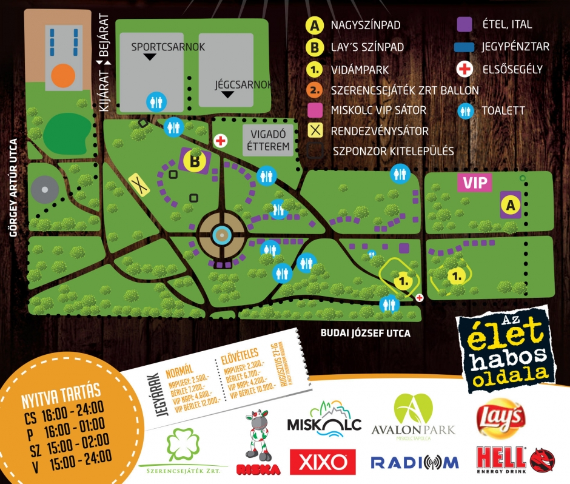

Miskolci Sörfesztivál, a kihagyhatatlan nyárbúcsúztató kulturális és gasztronómiai rendezvény.
Szeptember első hetében újra benépesül a miskolci Népkert, immár negyedszer kerül megrendezésre a Miskolci Sörfesztivál, a legnagyobb hazai "sörünnep". A csütörtöktől vasárnapig tartó esemény iránt idén minden eddiginél nagyobb az érdeklődés, a szervezők felkészültek az előző években tapasztalt közel 70.000 fős látogatói szám fogadására és bővítették a gasztronómiai kínálatot. A Borsodi Sörgyár teljes termékpalettája mellett kézműves sörök és külföldi sörkülönlegességek széles választéka, az ország minden szegletéből érkező árusok standjain számtalan ínycsiklandozó falat várja a fesztiválozókat.
Az ország legnagyobb sörfesztiválja, a Miskolci Sörfesztivál szeptember 1-tól 4-ig Miskolcon a Népkertben!
E-mail: info@sorfesztivalmiskolc.hu
|  |